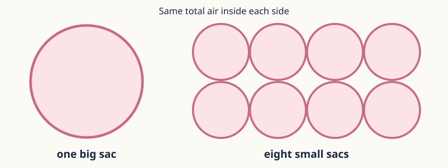

Depth cards
For when Parts 1–3 are secure. Open to everyone; the frames are there if you want them.
D1 · Counterexample
“At the lungs, gases always diffuse into the blood.” Break this rule with one gas, then write a better rule.
Frame: ___ breaks it because it is more concentrated in ___. Each gas …

D2 · Justified decision
Why millions of tiny alveoli, not one big sac holding the same air? Justify.
Frame: Many small sacs give more total ___, so more ___ at once, so …
D3 · Competing changes
Double the surface area and double the barrier thickness. Is exchange surely faster? What evidence would settle it?
Frame: More area makes it ___, more thickness makes it ___, so …
UAE · Jebel Jais
At Jebel Jais each lungful holds fewer O₂ particles (still about 21% O₂). Predict the effect on the O₂ gradient and on diffusion.
Frame: Less O₂ in the alveolus air makes the difference ___, so …
Write in your book. Your teacher will check it against the criteria.